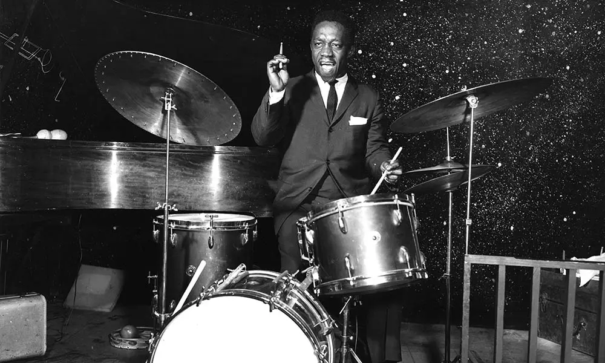

Léo : La musique
Sur mon temps libre, je nourris une passion dévorante pour la musique. J'ai commencé mon parcours musical jeune dans l'école de mon vilage, où j'ai pratiqué bon nombre d'instruments différents avant de trouver celui qui me correspond le mieux : la batterie. Ma passion m'a accompagné durant toute ma scolarité, j'ai pu monter des groupes notament au collège. En parralèle, j'ai continué mon apprentissage jusqu'à intégrer à la rentrée 2022 le Conservatoire Emmanuel-Chabrier de Clermont-Ferrand en classe de Jazz. Aujourd'hui, la musique est un pillier de ma vie, me permettant de m'exprimer pleinement et de rencontrer des personnes passionnantes et passionnées.
